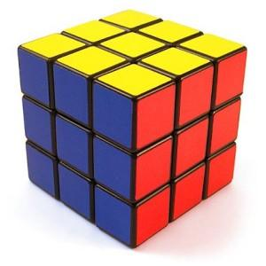
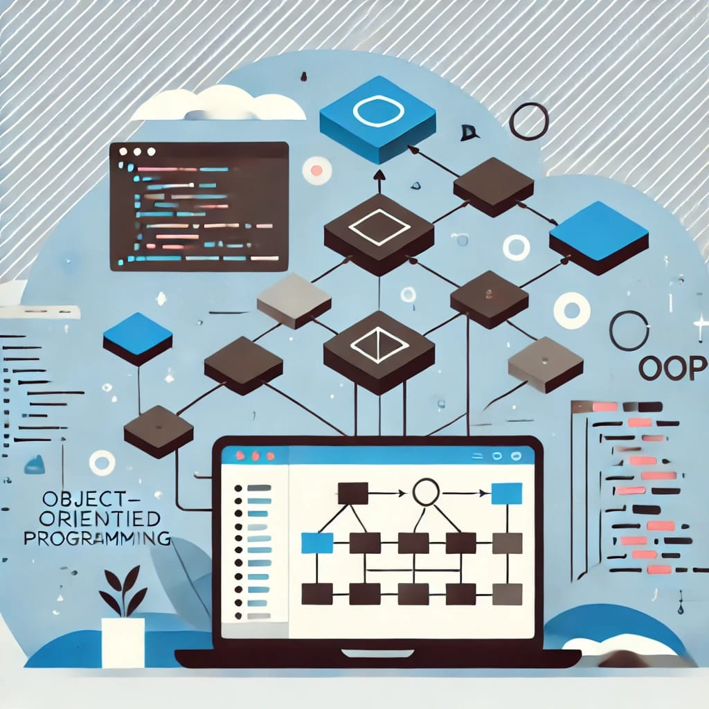
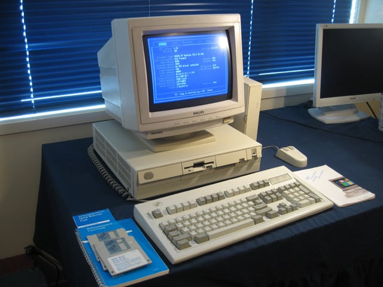

🌟💻Bienvenido al Curso de POO💻🌟
"La programación orientada a objetos nos permite modelar el mundo real en código"
🤔¿Qué es POO?🤔

La programación orientada a objetos o llamada como (POO) es un paradigma de programación basado en la idea de modelar el mundo real utilizando objetos, que son entidades que combinan datos (atributos o propiedades) y comportamiento (métodos o funciones). En programación orientada a objetos, en lugar de escribir todo el código en una estructura enorme y confusa, se divide el programa en partes más pequeñas y organizadas llamadas clases. Una clase es como una forma o plantilla que define las propiedades y el comportamiento que estarán presentes en los objetos creados a partir de ella.
¿Para qué funciona?

funciona para estructurar y organizar el código de una manera más clara, reutilizable y fácil de mantener. Se usa en una gran variedad de aplicaciones, desde videojuegos hasta sistemas empresariales.
📹Historia de la programacion orientada a objetos📹

La programación orientada a objetos (POO) es un desarrollo de programación estructurado utilizado para resolver problemas relacionados con la complejidad del software. Su desarrollo tomó décadas con contribuciones significativas de varios lingüistas y científicos informáticos.
🎩Decada de los 60🎩
En la década de 1960, el ingeniero noruego Ole-Johan Dahl y el científico de la computación Kristen Nygaard del Centro de Computación Noruego (Norsk Regnesentral) estaban trabajando en simulaciones para representar sistemas complejos. Para ello, desarrollaron un lenguaje llamado Simula (1967), considerado el primer lenguaje de programación orientado a objetos. Simula introdujo conceptos como: Clases y objetos, para representar entidades del mundo real. Herencia, permitiendo que una clase heredara características de otra.
🎠Decada de los 70🎠
El lenguaje Smalltalk fue desarrollado en la década de 1970 por Alan Kay y su equipo en Xerox PARC y se considera el primer lenguaje de programación totalmente orientado a objetos. Smalltalk refinó el concepto de OOP y popularizó los siguientes términos:
🎰Decada de los 80🎰

En la década de 1980, el POO comenzó a implementarse en lenguajes más populares, lo que facilitó su adopción en la industria. Algunos idiomas principales
📟Decada de los 90📟

En la década de 1990, la programación orientada a objetos se convirtió en el estándar para la mayoría de los sistemas grandes, gracias a los siguientes lenguajes:
🚧Actualidad🚧
Hoy en día, Poo es el paradigma más utilizado para el desarrollo de software, desde aplicaciones móviles hasta sistemas empresariales. Lenguajes como C#, Ruby, Kotlin, Swift y JavaScript han adoptado o incorporado principios de poo. A pesar de su éxito, en los últimos años han surgido enfoques alternativos, como la programación funcional, que pretenden abordar algunos de los desafíos de la POO, como la complejidad en sistemas muy grandes.
💭Conceptos Básicos💭
Clase
Una clase es como un molde o una plantilla para crear objetos. Imagina que tienes un plano de un coche, pero aún no es un coche real, solo un diseño. Un ejemplo seria:
class micamioneta {
String marca;
String modelo;
void arrancar() {
System.out.println("la camioneta arranca");
}
}
Objeto
Un objeto es una instancia específica de una clase. Representa una entidad concreta con sus propios valores de atributos.
camioneta micamioneta = new camioneta();
micamioneta.marca = "Toyota";
micamioneta.modelo="Hilux"
Instancia
Una instancia es un objeto específico creado a partir de una clase. Cada instancia tiene sus propios valores de atributos independientes.
camioneta camioneta1 = new camioneta(); // Primera instancia
camioneta camioneta2 = new camioneta(); // Segunda instancia